Roopa Vasudevan: UMass Amherst Teaching Archive
ART 234 (Art & Code) is an introduction to computer programming for artists using p5.js, an open-source framework for creative coding.
Following six weeks of small, weekly assignments designed to introduce or reinforce concepts covered in the first half of the semester, the midterm represents the first opportunity for students to integrate and synthesize their knowledge in service of a larger project.
There have been three iterations of the midterm project since Fall 2023, described below.
Students were required to create a project that could explore any concept, theme, or idea that they wished; the only requirement is that projects were developed within the p5.js environment.
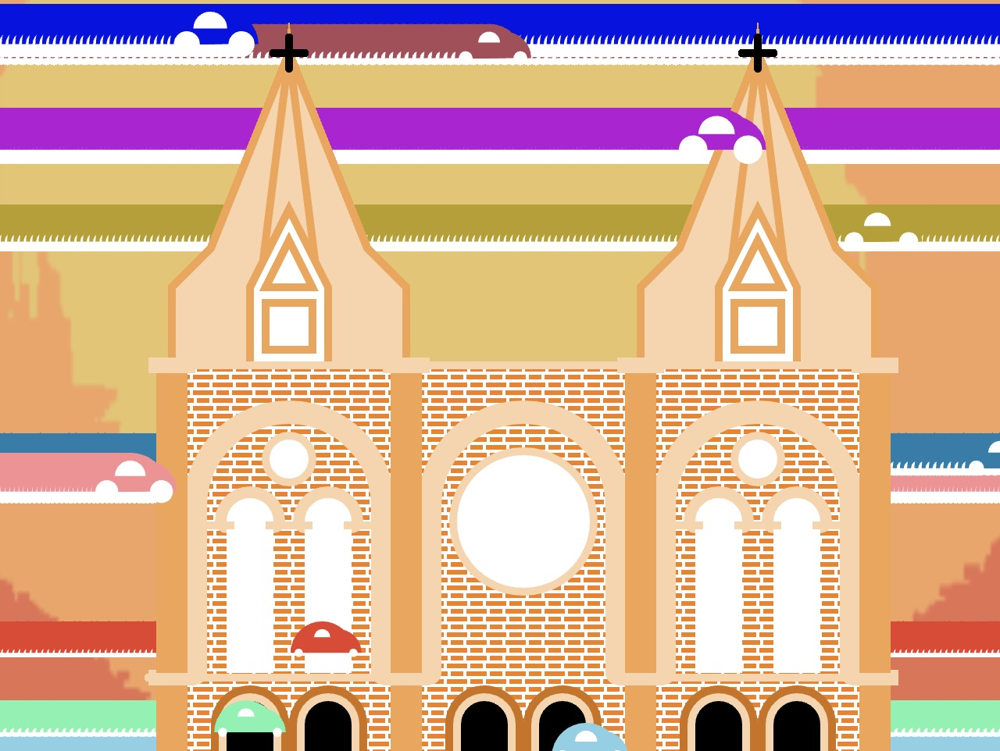
Francis Nguyen (Fall 2023)
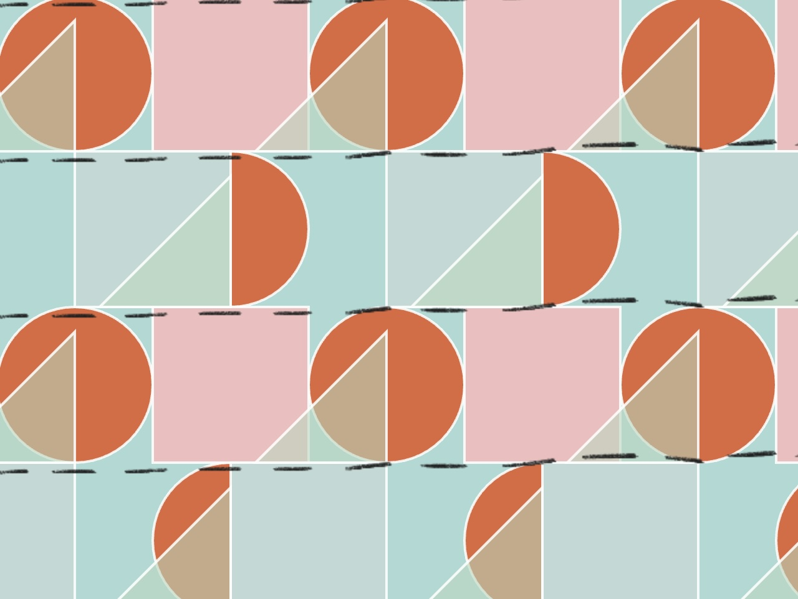
Gabrielle Lanza (Fall 2023)
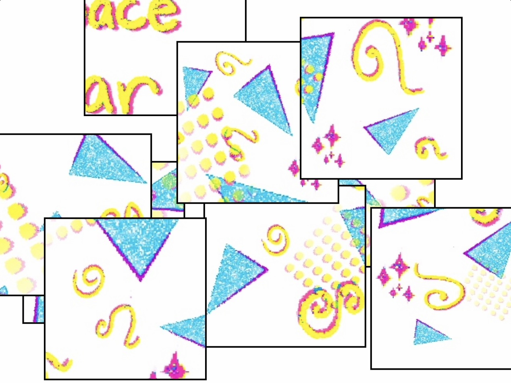
Jocelyn Fonseca (Fall 2023)
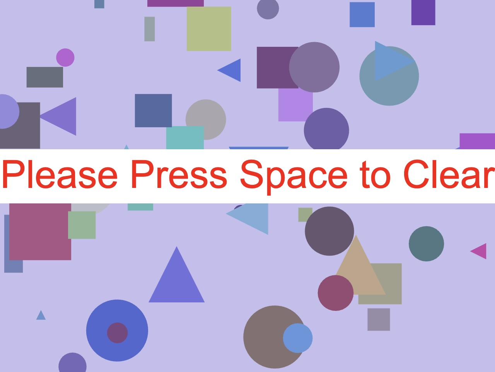
Nate Palmer (Fall 2023)
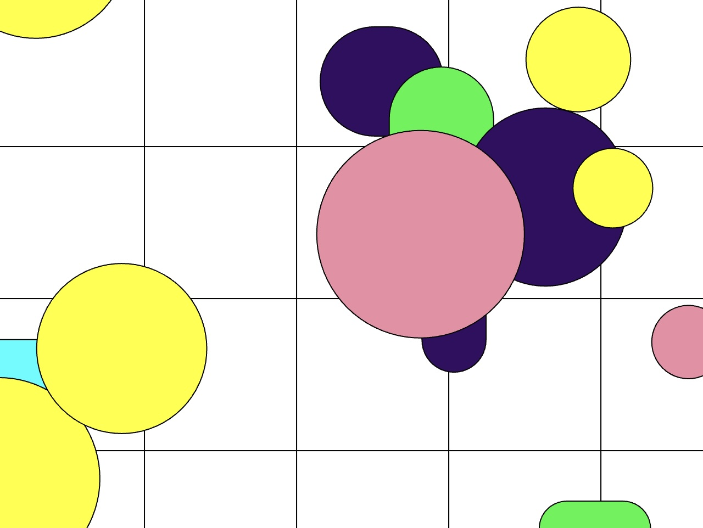
Charlotte Fishman (Spring 2024)
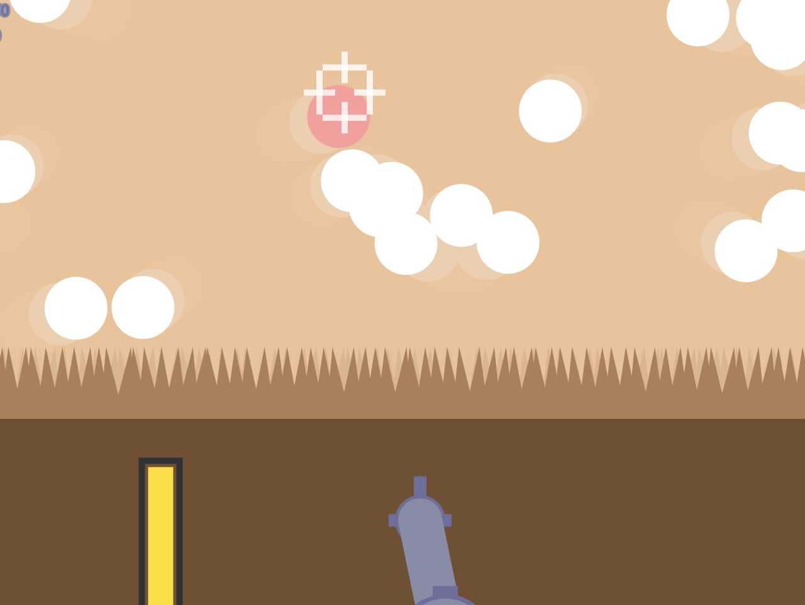
Ky Davey (Spring 2024)
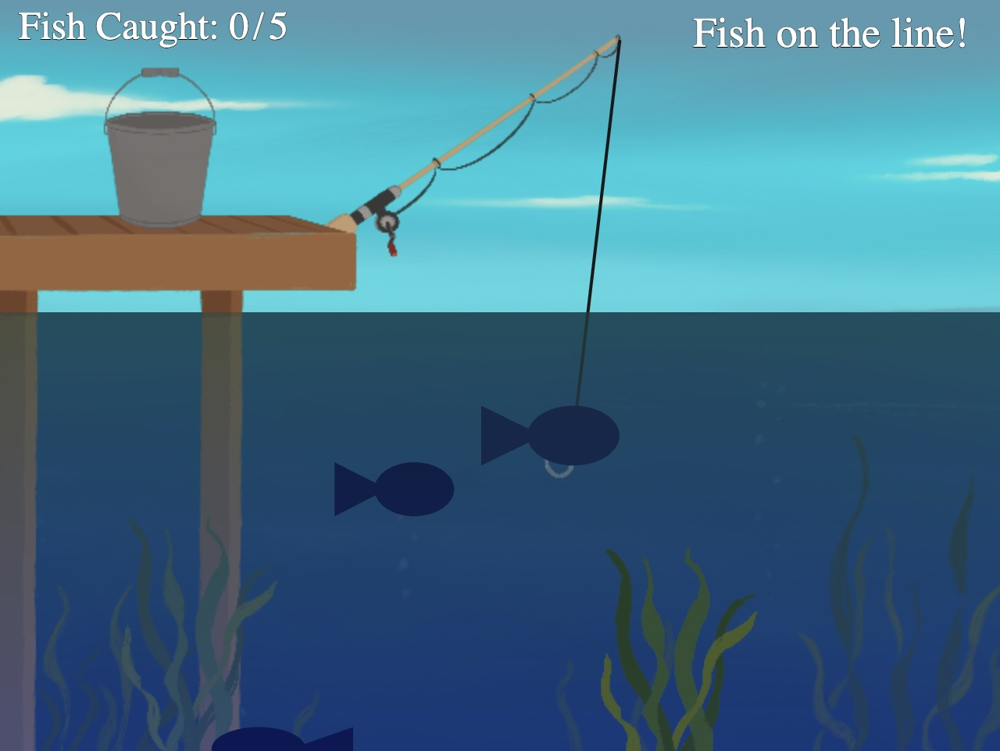
TJ LaLonde (Spring 2024)
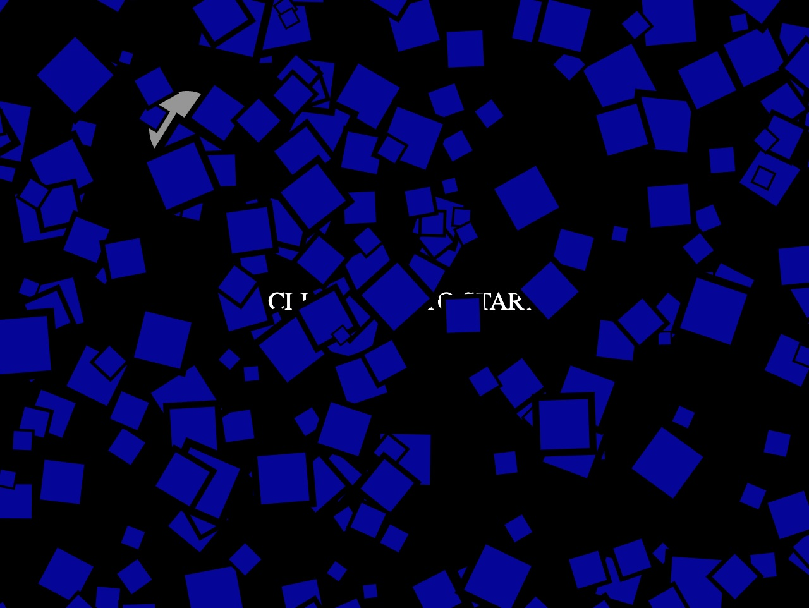
Tyler Millien (Spring 2024)
For the midterm project, students worked in pairs or small groups to create a digital reimagining of a Sol Lewitt wall drawing. Using our class discussions about Lewitt’s instruction-based work as inspiration, along with our field trip to MASS MoCA to see the work in person, each group was required to pick one of Lewitt’s works as a starting point and reinterpret his instructions to be reflected in p5.js using the programming fundamentals covered in the first half of the semester. The project could involve animation and interaction, and could deviate from the original drawing, but it must have been clear to the viewer which work is being used as inspiration.
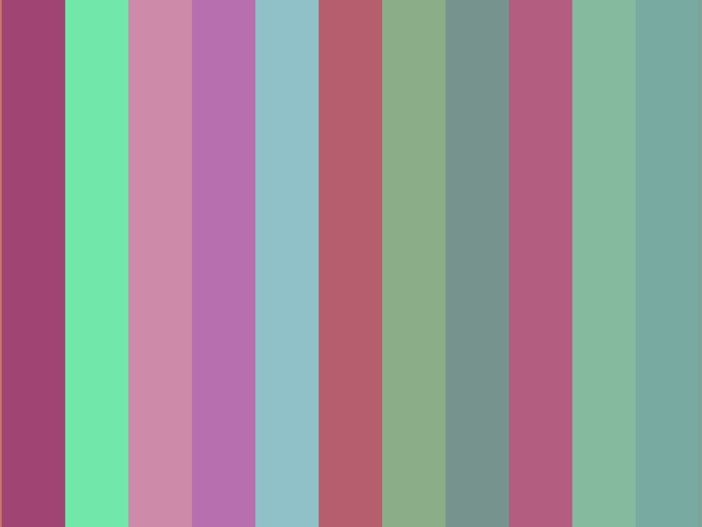
Amalia Rubinstein & Carlee Lin
(Fall 2024)
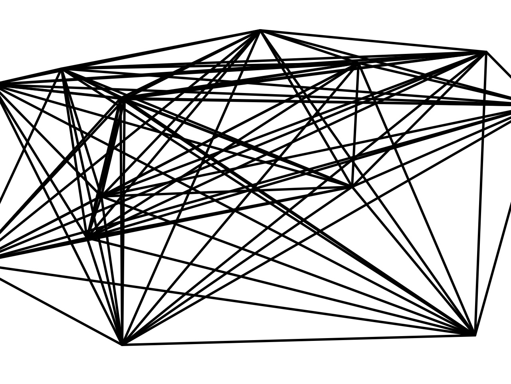
Giuseppe Capua & Parth Tare
(Fall 2024)
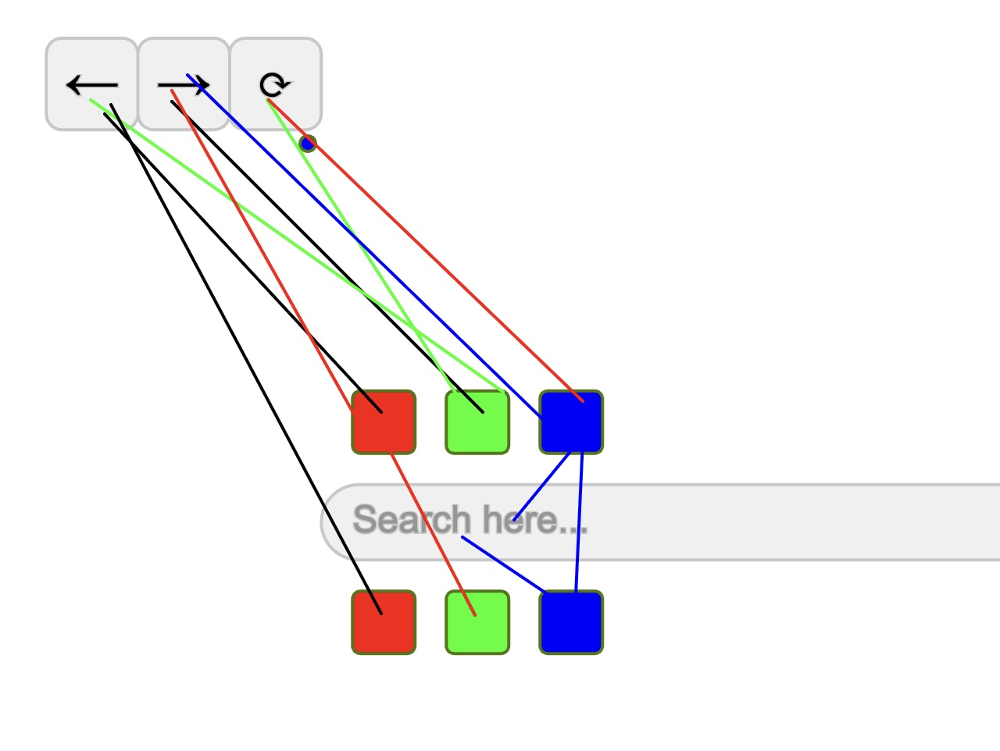
Madison Gallant & Owen Lonergan
(Fall 2024)
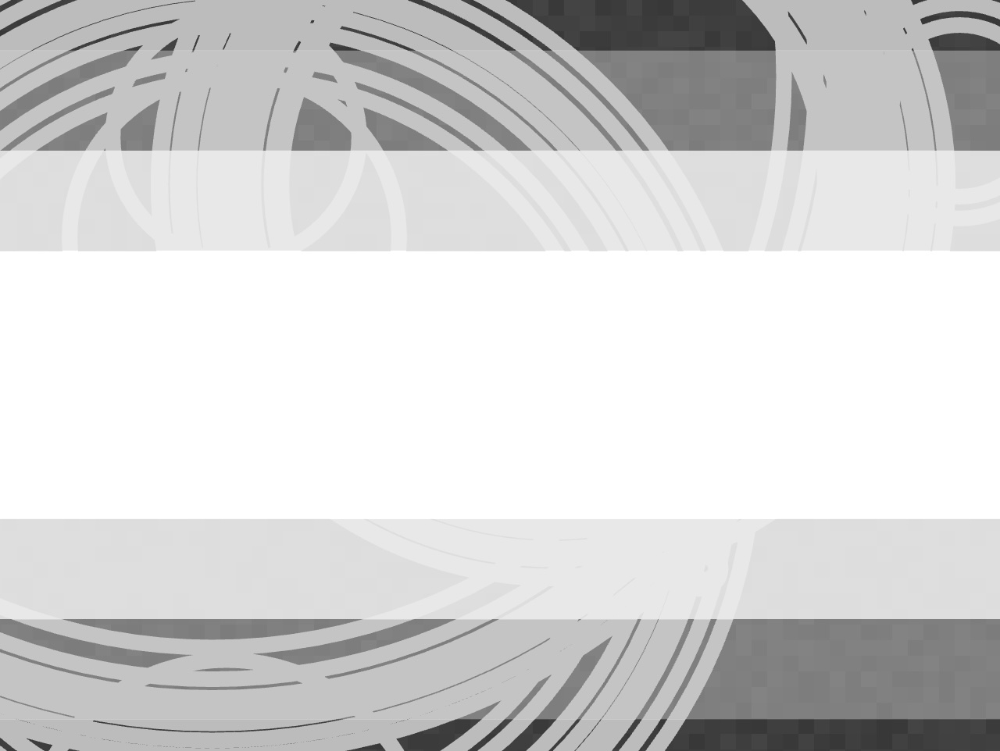
Lily Rice, Karma Whittemore & Sam O’Brien
(Fall 2024)
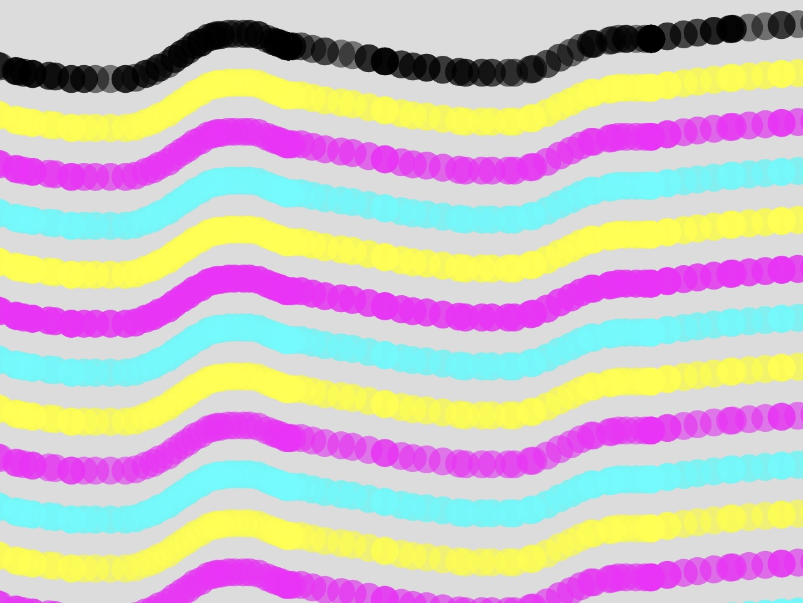
Bella Chu & Emma Brenner-Slagle
(Spring 2025)
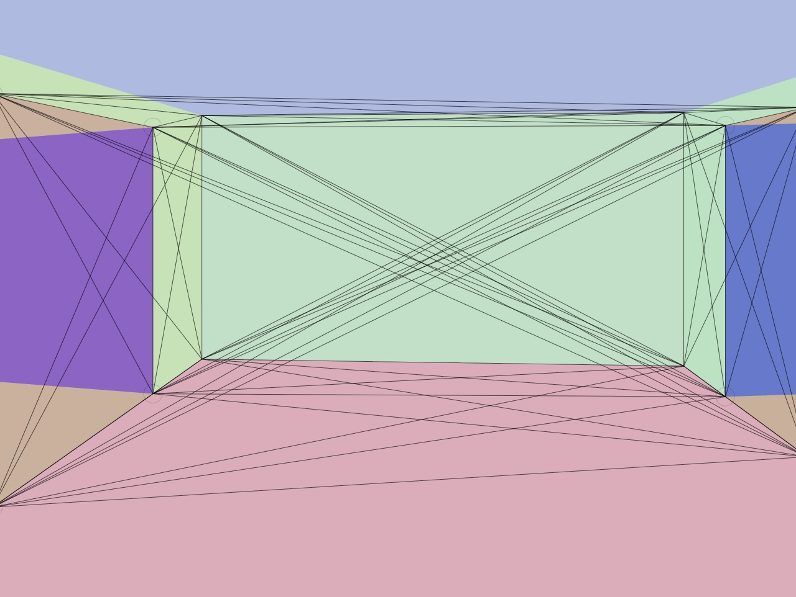
Farrell Saluja & George Adams
(Spring 2025)
For the midterm project, students worked in pairs or small groups to create a drawing application in the style of a modern or contemporary artist of their choosing. The projects were required to include at least 3 different styles available for someone to use to draw to the screen; an ability to progressively erase what has been done; a randomly-generated element; an animated element; and the use of a predetermined color palette. The drawings generated were supposed to speak to or resemble the work of the reference artist, but did not need to replicate any specific work exactly.